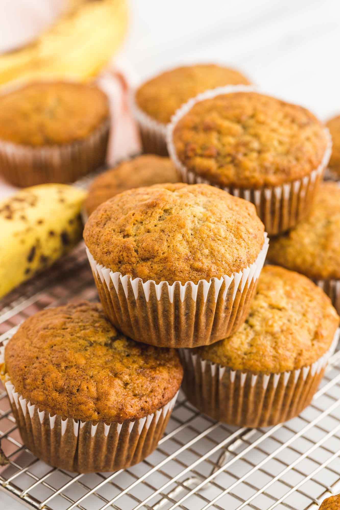

Banana Muffins

Delicous banana muffins covered in cinnamon brown sugar!
Recipe featured in: Cooking With Evan and Katelyn
Ingredients
- 1 cup Flour
- 1/2 tsp Baking Soda
- 1/8 tsp Salt
- 1 tsp Cinnamon
- 1/4 tsp Nutmeg
- 1/4 cup Softened Butter
- 1/2 cup Packed Brown Sugar
- 1 Beaten Egg
- 2.5 - 3 Very Ripe Bananas
- 3/4 tsp Vanilla
Steps
- Preheat oven to 325°F.
- Combine flour, baking soda, salt, cinnamon, and nutmeg in a large bowl.
- In a separate bowl, cream butter and sugar together.
- Once creamed, mix in egg, vanilla, and mashed bananas.
- Stir wet mixture into dry mixture until just moistened
- Add into greased or lined muffin tins and bake for 17-22 minutes
- Drizzle with melted butter and sprinkle cinnamon sugar